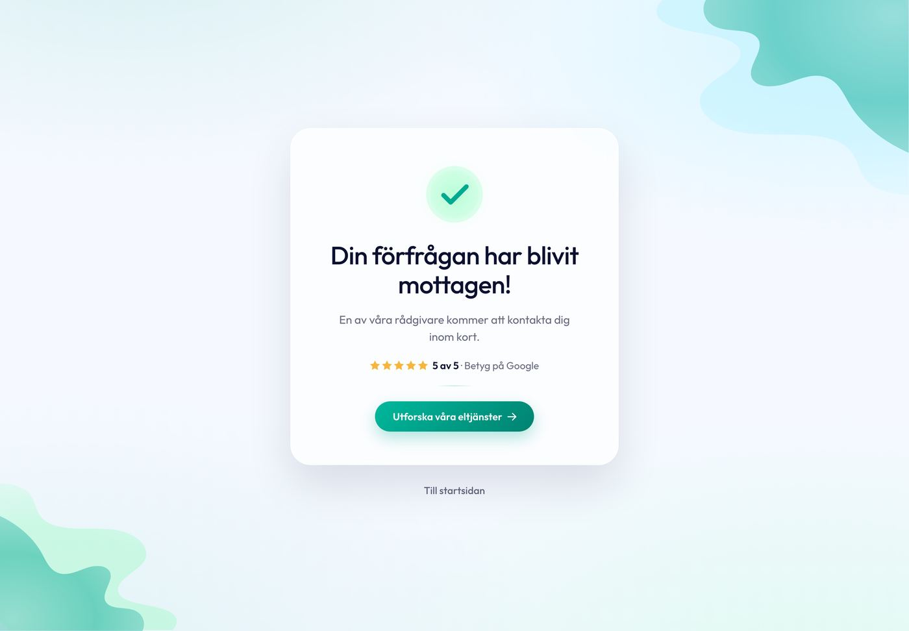

Ytor och kort
Fem ytor bär hela sajten: det ljusa kortet, det mörka resultatkortet, glaskortet i kundflödet, navy-ramen kring hjältar och sektionsbanden. En kortradie (20 till 16), en skuggfärg (midnight-alfa) i tre styrkor, en hårlinje.
Kanon: ljust kort live-ampy-se (.rot__container: vit, radie --apradius-l, på sky-mist) med ram och skugga ur eljour-block (index.html:21,57-58, skuggan navy-alfa enligt B10); mörkt kort led-kalkylator (styles.css:125-134, glöden är tillval enligt B9); glaskort thank-you (v1/styles.css:36-46) och mörkt glas fore-efter-cro (dist/01-fore-efter.css:281-290); navy-ram hero-1 (assets/style.css:190-235); avdelare LED (__internal-divider), thank-you (.divider); band live theme-style .brxe-section + testimonials + visste-du-att; aurora thank-you (v1/styles.css:18-24, bara kundflödet enligt B11). Finns även i: testimonials, main-cta, var-process, fotobedomningen, mini-menu, elkollen/elcentral, booking, main-form, rot-gt, EV, battery, energycalc (avvikelser längst ned). Blockbiblioteket: Tack-sidan, LED-kalkylatorn, Hero-1.

Så här ser källan ut: kallor/Thank-you-Offer-accepted/v1 vid 1440, glaskortet på auroran. Kortet nedan är klonen.
Ljust kort
Vitt på sky-mist, radie 20 (16 på mobil), 1 px hårlinje och skuggan 0 10px 30px rgba(9,11,50,.07) ur eljour-blocket i stället för "husets" gråa rgba(190,190,190,.19) (B10). Padding 28 (17 på mobil). Varianter: --flat (LED:s inputkort, bara 1 px kant), --plain, --raised (lyfta lager), --lg (40 px padding, resultat- och processkort), --tight (20 px), --hover (certificates: lyft 2 px).
Byte av elcentral i villa
Ny normcentral med jordfelsbrytare och automatsäkringar. Fast pris efter rådgivning, ROT dras på fakturan.
Byte av elcentral i villa
Ny normcentral med jordfelsbrytare och automatsäkringar. Fast pris efter rådgivning, ROT dras på fakturan.
Byte av elcentral i villa
Ny normcentral med jordfelsbrytare och automatsäkringar. Fast pris efter rådgivning, ROT dras på fakturan.
Byte av elcentral i villa
Ny normcentral med jordfelsbrytare och automatsäkringar. Fast pris efter rådgivning, ROT dras på fakturan.
Byte av elcentral i villa
Ny normcentral med jordfelsbrytare och automatsäkringar. Fast pris efter rådgivning, ROT dras på fakturan.
Byte av elcentral i villa
Ny normcentral med jordfelsbrytare och automatsäkringar. Fast pris efter rådgivning, ROT dras på fakturan.
Byte av elcentral i villa
Ny normcentral med jordfelsbrytare och automatsäkringar. Fast pris efter rådgivning, ROT dras på fakturan.
Mörkt resultatkort
LED-kalkylatorns resultatkort: midnight, radie 20, padding 40 (20/15 under 600), skuggan raised, vit text i sju alfa-steg. Platt är default. Radialglöden (teal .28 uppe höger, emerald .16 nere vänster) finns som --glow för kalkylatorernas resultatkort där siffran står i mitten, aldrig för en mörk yta med centrerad vit rubrik (B9, "AI-slop-defaulten").
- Energi du kapar16 819 kWh/år59 % lägre förbrukning
- CO₂ du sparar7,8 ton/årjämfört med nordisk elmix
- Uppskattad kostnad120 000 krinklusive installation
- Energi du kapar16 819 kWh/år59 % lägre förbrukning
- CO₂ du sparar7,8 ton/årjämfört med nordisk elmix
- Uppskattad kostnad120 000 krinklusive installation
Blev rekommenderad av en granne att gå via Ampy. Är otroligt nöjd med det valet.
Filip Eriksson
Glaskort
Tack-sidans kort: vit .72, 1 px vit .9, inset-highlight, blur(16px) saturate(1.1), radie 32 (16 under 520), padding 52/56 (36/24). Bara på den ljusa auroran i kundflödet (tack, offert accepterad, bokning). Mörkt glas (--glass-dark) ur före/efter-chipen: midnight .82 + blur 10.
Din förfrågan är mottagen
En av våra rådgivare kontaktar dig inom kort.
Utforska våra eltjänster
Dra i reglaget för att se skillnaden.
Navy-ram (hjälteram)
Hero-1:s ram: max 1700 px, radie 22 (18 på mobil) i källan, här kortradien 20/16, höjd 100svh minus header och 48 px (620 till 950), fotot med object-position 62% 60% och den tvådelade veilen --ampy-scrim-hero. Innehållet max 880 px vänster, proof-raden i nedre högra hörnet, allt mot foten under 560. Här utan foto (hero-2 S/E) och i kort variant --short; med foto är det Hero-1-blocket.
Elinstallationer i hemmet, gjort ordentligt.
Behöriga elektriker som berättar vad som behövs, och vad det kostar, innan vi börjar.
Fullbredd tillåten (ägardirektiv 2026-08-14): --ampy-container är inte ett tak för ramen.
Avdelare
Hårlinjen --ampy-line (midnight .14) med stack-luft ovanför och under; --strong för kontrollkanter, --teal är tack-sidans 60 px toning, --tight utan luft. På mörkt: vit .14 (LED:s interna avdelare).
Text ovanför avdelaren.
Text under. Stark variant:
Teal-toning, centrerad 60 px:
Tät variant utan luft:
Text direkt under.
Hero-siffran ovanför.
Stat-trion under.
Sektionsband
Sektionens rytm: padding 79/35 vertikalt (--ampy-space-section-y = 2xl), gutter 40/21. Sky-mist är sidans grund, vitt band för kortsektioner, --fade tonar sky-mist till vitt (elcentrals blockläge), --dark för midnight-sektioner, --tight med xl-padding (certificates, main-cta). Innehållet centreras i __inner (1280).
Sektion på sidans grund
Tight-variant: xl-padding 56/27.
Vit sektion
För kort som annars skulle ligga vitt på vitt.
Sky-mist till vitt
Elcentral-kollens blockläge.
Midnight-sektion
Platt, utan glöd. Footer, visste-du-att och hero-2 S/E bor här.
Den ljusa auroran
Fyra radialer (teal .12, crystal-blue .48, sublime-green .28, teal .08) på sky-mist, identiska i tack, offert accepterad och bokning. Klassen .ampy-aurora lägger den som bakgrund på valfri yta. Bara kundflödets bekräftelsescener (B11), aldrig som sektionsdekor på tjänstesidorna. Utan background-attachment: fixed (iOS renderar det inte).
Aurora, 4 radialer på sky-mist
Anatomi
| Yta | Radie 1440 / 390 | Padding 1440 / 390 | Kant och skugga | Färg | Källa |
|---|---|---|---|---|---|
| Ljust kort | 20 / 16,3 (live --apradius-l) | 28 / 16,9 (--lg 39,6 / 21,5; --tight 19,8 / 13,3) | 1 px rgba(9,11,50,.14); 0 10px 30px rgba(9,11,50,.07) | #fff på #f5f9ff, text #090b32 | live .rot__container + eljour index.html:57 |
| Mörkt resultatkort | 20 / 16,3 | 39,6 / 19,8 x 10,5 (LED 40 / 20 x 15) | ingen kant; 0 16px 40px rgba(9,11,50,.14) | #090b32; glöd teal .28 + emerald .16 som tillval | LED styles.css:125-134 |
| Glaskort | 32 / 16,3 (24,5 fluid, 16,3 under 520) | 52 x 56 / 36 x 21,5 (källan 36 x 24) | 1 px vit .9; 0 30px 70px .12 + inset vit .6; blur 16 saturate 1.1 | vit .72 | thank-you v1/styles.css:36-46 |
| Mörkt glas | 20 / 16,3 | fritt | 1 px vit .16; 0 2px 10px .18; blur 10 saturate 150 % | midnight .82 | fore-efter dist/01:281-290 |
| Navy-ram | 20 / 16,3 (källan 22 / 18) | innehåll 0 x clamp(24, 5vw, 84); max 880 | ingen; veil 98° .68 till .02 + 0° .38 till 0 | #090b32 bakom fotot | hero-1 style.css:190-235 |
| Avdelare | 0 | margin 19,8 / 13,3 (--tight 0) | 1 px rgba(9,11,50,.14); på mörkt vit .14 | --teal: 60 px toning teal .35 | var-process, LED, thank-you :73 |
| Band | 0 | 79,2 x 39,6 / 34,8 x 21,5 (--tight 56 / 27,3) | ingen | #f5f9ff, #fff, toning, #090b32 | theme-style .brxe-section, testimonials, visste-du-att |
Gör och gör inte
- Vitt kort på sky-mist, aldrig vitt på vitt: byt band eller använd
--flatmed kant. - En skuggfärg (midnight-alfa) i tre styrkor: subtle, card, raised. Skuggan följer lyftet, inte tvärtom.
- Mörkt kort bara där siffran är innehållet (resultat, kvitto, citat). Platt är default, glöden är verktygens tillval.
- Husets gråa skugga
rgba(190,190,190,.19)på blå-tonade ytor (ser smutsig ut mot sky-mist, B10). - Mörkt kort med radialglöd och centrerad vit rubrik som default: det är AI-slop-defaulten (B9). Midnattsblå scrims som yta.
- Fem kortradier (14, 15, 20, 22, 32) i samma sajt: kortet är 20, glaset 32, fältet 12, knappen 16. Auroran som sektionsdekor.
Kod
<!-- Ljust kort på sky-mist -->
<div class="ampy-card">
<span class="ampy-eyebrow">Elcentral</span>
<h3>Byte av elcentral i villa</h3>
<p>Ny normcentral med jordfelsbrytare. Fast pris efter rådgivning.</p>
</div>
<!-- Mörkt resultatkort (platt); lägg till ampy-card--glow bara i kalkylatorer -->
<div class="ampy-card ampy-card--dark">
<div class="ampy-readout">…</div>
<hr class="ampy-divider">
<ul class="ampy-stat-trio">…</ul>
</div>
<!-- Glaskort på auroran (kundflödet), centrerat som tack-sidan -->
<main class="ampy ampy-aurora">
<div class="ampy-card ampy-card--glass ampy-card--center">…</div>
</main>
<!-- Navy-ram med foto -->
<section class="ampy-frame">
<img class="ampy-frame__media" src="hero.webp" alt="">
<div class="ampy-frame__veil" aria-hidden="true"></div>
<div class="ampy-frame__content">
<h1 class="ampy-display">Elinstallationer i hemmet, gjort ordentligt.</h1>
<p class="ampy-lead">…</p>
</div>
<div class="ampy-frame__foot"><div class="ampy-proof">…</div></div>
</section>
<!-- Band -->
<section class="ampy-band ampy-band--dark"><div class="ampy-band__inner">…</div></section>Avvikelser i blocken
| Block | Avvikelse mot kanon | Åtgärd |
|---|---|---|
| live (ROT/GT-kort), testimonials, main-cta, var-process | husets skugga 0 0 16px rgba(190,190,190,.19 / .14 / .4) | --ampy-shadow-card (B10) |
| elkollen, elcentral | radie 14, ram #ebedf3, 0 8px 28px rgba(11,13,42,.07), fast höjd 560 | radie 20, --ampy-line, tokenskugga |
| main-form, mini-menu, booking, rot-gt, hero-1-ram, hero-2-form | radie 15 / 22 / 22 / 32 / 22 / 27 | 20 (glas 32) |
| EV, battery, energycalc | mörkt kort med glöd som default; energycalc tre radialer + inset-highlight; padding 20 | platt default, --glow som tillval; padding 40 |
| testimonials-kort | gradient -27° #0b0f30 till #2d516d, radie 16, husets skugga | midnight platt, radie 20 |
| rot-gt kvittopanel, hero-2 Z | rgb(27,29,75) med blobbar, radie 22; #16183f med dager | midnight |
| visste-du-att | en radial (teal .42 + neon .18), padding 79 | behåller sin radial (slutaudit GO) |
| offer-accepted, booking | glas .74 med linjer; .85 utan blur, radie 22 | .72 + blur 16 (B15), bokningen får blur eller accepterad avvikelse |
| hero-2-form | mörkt glas midnight + 156.51° till #5eb1bf .76 + blur 30, radie 27 (kant 1,2:1) | utgår |
| hero-2-alternatives | ram 1424 bred, h 683, radie 22/18, H1 48 | två hjälteramar tillåtna: 1700/60 (start) och 1424/48 (tjänstesidor) |
| certificates | sektion 90° navy till #5eb1bf med vit text (2,47:1) och tre SVG-vågor | midnight-yta eller mörkare slut (B16) |
| mini-menu | mörk aurora-fallback (fem navyer) | bara den ljusa auroran finns som token |